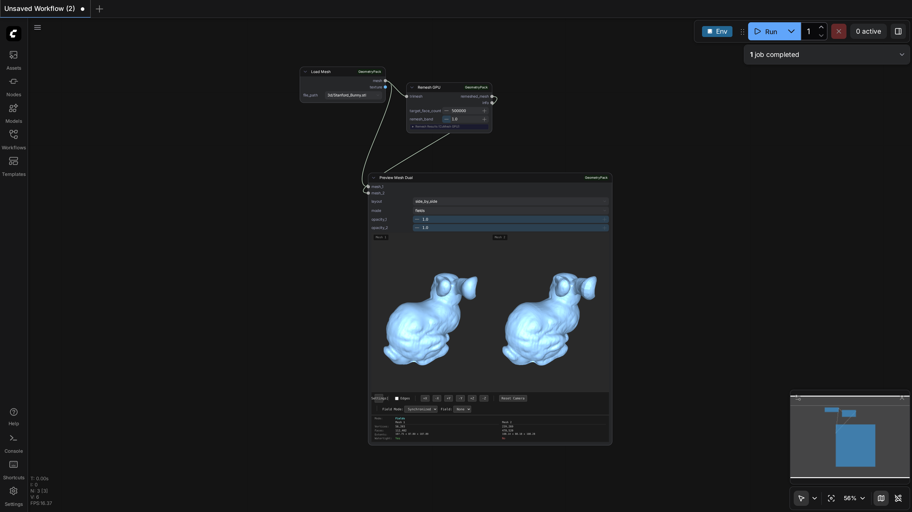

ComfyUI-GeometryPack
Test Results
2026-02-23 21:29 UTC
Linux-6.8.0-90-generic-x86_64-with-glibc2.35
Intel(R) Xeon(R) CPU E5-2683 v4 @ 2.10GHz
NVIDIA RTX A6000
100.0%
1 passed
1/1 tests
Workflows
Grid
List

remeshing_gpu
pass
27.64s
×
0.0s / 0.0s
Resource Usage
RAM (GB)
VRAM (GB)